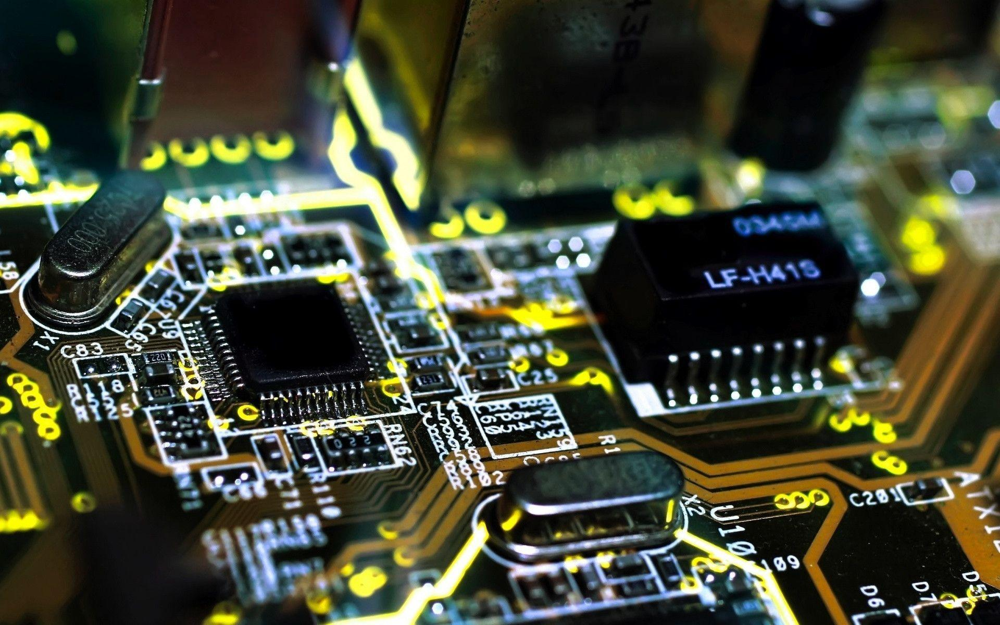

Petita descripció En aquesta assignatura aprenem a administrar i explotar sistemes informatics.Bàsicament, un sistema informàtic, més conegut en l'àmbit de la tecnologia per les seves sigles "SI" és una tècnica que permet l'emmagatzematge i el procés d'informació, per a això es val d'un grup d'elements que es relacionen entre si. Aquests elements no són altres que el maquinari, el programari i finalment l'usuari, qui és el que requereix de la informació processada, i qui és també el que en definitiva té el control total del que succeeix en el sistema. Fa algunes dècades, els components que conformaven un sistema informàtic solien ser tots fabricats pel mateix manufacturador. En aquests dies no existia cap tipus d'estàndard que permetés que els components de diferents fabricants poguessin treballar entre si. Per exemple, monitors, impressores, targetes d'expansió i qualsevol altre tipus de perifèric no podia ser utilitzat en un ordinador d'una altra marca, simplement no era reconeguda per no tenir el mateix estàndard de comunicació. El mateix succeïa en l'àmbit de l'programari. Els programes només podien ser executats a l'ordinador per a la qual havia estat dissenyat. Per descomptat que això entorpia molt el creixement de les empreses, i havien d'estar lligats als capricis i designis de l'fabricant que havien triat per suplir les seves necessitats informàtiques.Afortunadament, en l'actualitat això no és així, gràcies als anomenats "Sistemes oberts", els quals permeten utilitzar diferents components de diferents fabricants sense problemes de compatibilitat. Això va permetre que el maquinari i el programari necessaris per implementar un sistema informàtic poguessin estar disponible de manera senzilla i relativament barat perquè les empreses més petites poguessin accedir a aquests recursos informàtics.
